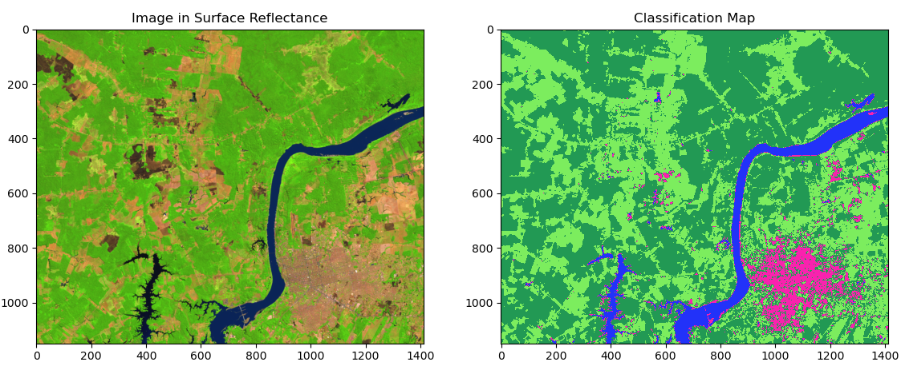
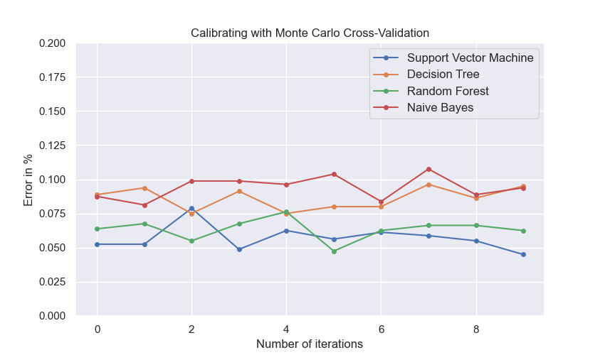
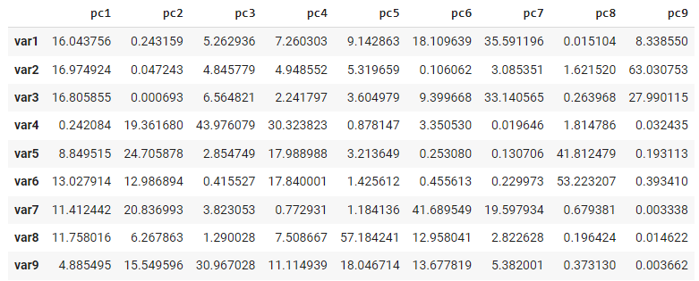
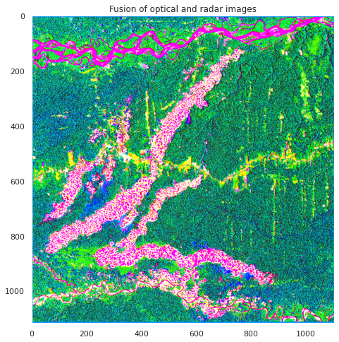

Brief examples
Example 01: Random Forest (RF) classifier
In this example, in a small region of southern Brazil, optical imagery from Landsat-8 OLI (Operational Land Imager) will be used to classify land cover using the machine learning algorithm Random Forest (RF) Breiman2001. Four types of land cover will be mapped, i.e., agriculture, forest, bare soil and water. The input data needed is the satellite image and the spectral signatures collected. The output as a dictionary will provide: i) confusion matrix, ii) overall accuracy, iii) kappa index and iv) a classes map.
1
2
3
4
5
6
7
8
9
10
11
12
13
14
15
16
17
18
19
20
21
22
23
24
25 | # 01. Libraries to be used in these examples
import rasterio
import numpy as np
from dbfread import DBF
from scikeo.mla import MLA
from scikeo.fusionrs import fusionrs
from scikeo.calmla import calmla
from scikeo.plot import plotRGB
import matplotlib as mpl
import matplotlib.pyplot as plt
import seaborn as sns
sns.set()
# 02. Image and endmembers
path_raster = "\data\ex_O1\LC08_232066_20190727_SR.tif"
img = rasterio.open(path_raster)
path_endm = "\data\ex_O1\endmembers\endmembers.dbf"
endm = DBF(path_endm)
# 03. An instance of mla()
inst = MLA(image = img, endmembers = endm)
# 04. Applying RF with 70% of data to train
rf_class = inst.RF(training_split = 0.7)
|
Classification results:

Example 02: Calibration methods for supervised classification
Given a large number of machine learning algorithms, it is necessary to select the one with the best performance in the classification, i.e., the algorithm in which the training and testing data used converge the learning iteratively to a solution that appears to be satisfactory Tarazona2021.
To deal with this, users can apply the calibration methods Leave One Out Cross-Validation (LOOCV), Cross-Validation (CV) and Monte Carlo Cross-Validation (MCCV) in order to calibrate a supervised classification with different algorithms. The input data needed are the spectral signatures collected as a .dbf or .csv. The output will provide a graph with the errors of each classifier obtained.
| # 01. Endmembers
path_endm = "\data\ex_O2\\endmembers\endmembers.dbf"
endm = DBF(path_endm)
# 02. An instance of calmla()
inst = calmla(endmembers = endm)
# 03. Applying the splitData() method
data = inst.splitData()
|
Calibrating with Monte Carlo Cross-Validation Calibration (MCCV)
Parameters:
split_data: An instance obtaind with splitData().models: Support Vector Machine (svm), Decision Tree (dt), Random Forest (rf) and Naive Bayes (nb).n_iter: Number of iterations.
| # 04. Running MCCV
error_mccv = inst.MCCV(split_data = data, models = ('svm', 'dt', 'rf', 'nb'),
n_iter = 10)
|
Calibration results:

Example 03: Imagery Fusion.
This is an area where scikit-eo provides a novel approach to merge different types of satellite imagery. We are in a case where, after combining different variables into a single output, we want to know the contributions of the different original variables in the data fusion. The fusion of radar and optical images, despite of its well-know use, to improve land cover mapping, currently has no tools that help researchers to integrate or combine those resources. In this third example, users can apply imagery fusion with different observation geometries and different ranges of the electromagnetic spectrum Tarazona2021. The input data needed are the optical satellite image and the radar satellite image, for instance.
In scikit-eo we developed the function fusionrs() which provides us with a dictionary with the following image fusion interpretation features:
- Fused_images: The fusion of both images into a 3-dimensional array (rows, cols, bands).
- Variance: The variance obtained.
- Proportion_of_variance: The proportion of the obtained variance.
- Cumulative_variance: The cumulative variance.
- Correlation: Correlation of the original bands with the principal components.
- Contributions_in_%: The contributions of each optical and radar band in the fusion.
1
2
3
4
5
6
7
8
9
10
11
12
13
14
15
16
17
18
19
20
21
22
23
24
25
26
27
28
29
30
31
32
33
34
35
36
37
38
39 | # 01 Loagind dataset
path_optical = "data/ex_03/LC08_003069_20180906.tif"
optical = rasterio.open(path_optical)
path_radar = "data/ex_03/S1_2018_VV_VH.tif"
radar = rasterio.open(path_radar)
# 02 Applying the fusionrs:
fusion = fusionrs(optical = optical, radar = radar)
# 03 Dictionary of results:
fusion.keys()
# 04 Proportion of variance:
prop_var = fusion.get('Proportion_of_variance')
# 05 Cumulative variance (%):
cum_var = fusion.get('Cumulative_variance')*100
# 06 Showing the proportion of variance and cumulative:
x_labels = ['PC{}'.format(i+1) for i in range(len(prop_var))]
fig, axes = plt.subplots(figsize = (6,5))
ln1 = axes.plot(x_labels, prop_var, marker ='o', markersize = 6,
label = 'Proportion of variance')
axes2 = axes.twinx()
ln2 = axes2.plot(x_labels, cum_var, marker = 'o', color = 'r',
label = "Cumulative variance")
ln = ln1 + ln2
labs = [l.get_label() for l in ln]
axes.legend(ln, labs, loc = 'center right')
axes.set_xlabel("Principal Component")
axes.set_ylabel("Proportion of Variance")
axes2.set_ylabel("Cumulative (%)")
axes2.grid(False)
plt.show()
|

| # 07 Contributions of each variable in %:
fusion.get('Contributions_in_%')
|

| # 08 Preparing the image:
arr = fusion.get('Fused_images')
## Let´s plot
fig, axes = plt.subplots(figsize = (8, 8))
plotRGB(arr, bands = [1,2,3], title = 'Fusion of optical and radar images')
plt.show()
|

Example 04: Accuracy assessment
In this final example, after obtaining the predicted class map, we are in a case where we want to know the uncertainties of each class. The assessing accuracy and area estimate will be obtained following guidance proposed by OLOFSSON201442. All that users need are the confusion matrix and a previously obtained predicted class map.
confintervalML requires the following parameters:
- matrix: confusion matrix or error matrix in numpy.ndarray.
- image_pred: a 2-dimensional array (rows, cols). This array should be the classified image with predicted classes.
- pixel_size: Pixel size of the classified image. Set by default as 10 meters. In this example is 30 meters (Landsat).
- conf: Confidence interval. By default is 95% (1.96).
- nodata: No data must be specified as 0, NaN or any other value. Keep in mind with this parameter.
| # 01 Load raster data
path_raster = r"\data\ex_O4\ml\predicted_map.tif"
img = rasterio.open(path_optical).read(1)
# 02 Load confusion matrix as .csv
path_cm = r"\data\ex_O4\ml\confusion_matrix.csv"
values = pd.read_csv(path_radar)
# 03 Applying the confintervalML:
confintervalML(matrix = values, image_pred = img, pixel_size = 30, conf = 1.96,
nodata = -9999)
|
Results:

Last update:
2023-06-25